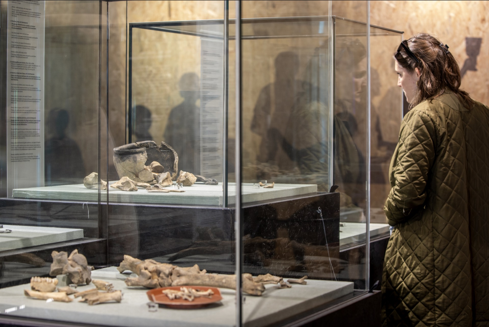
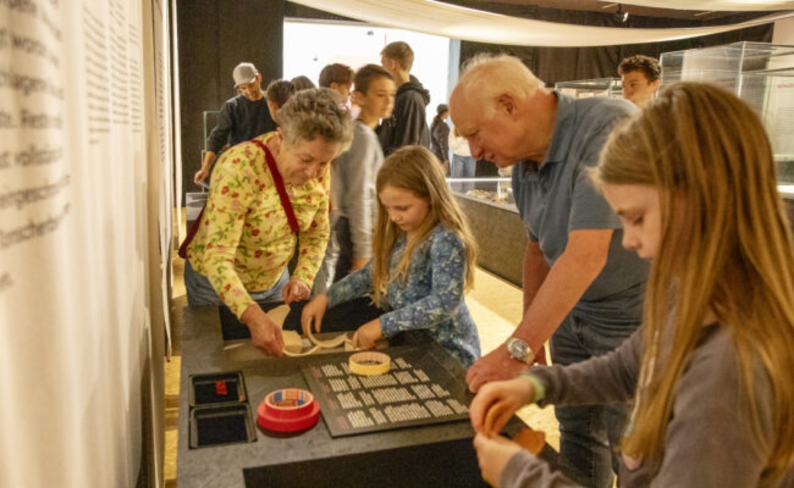
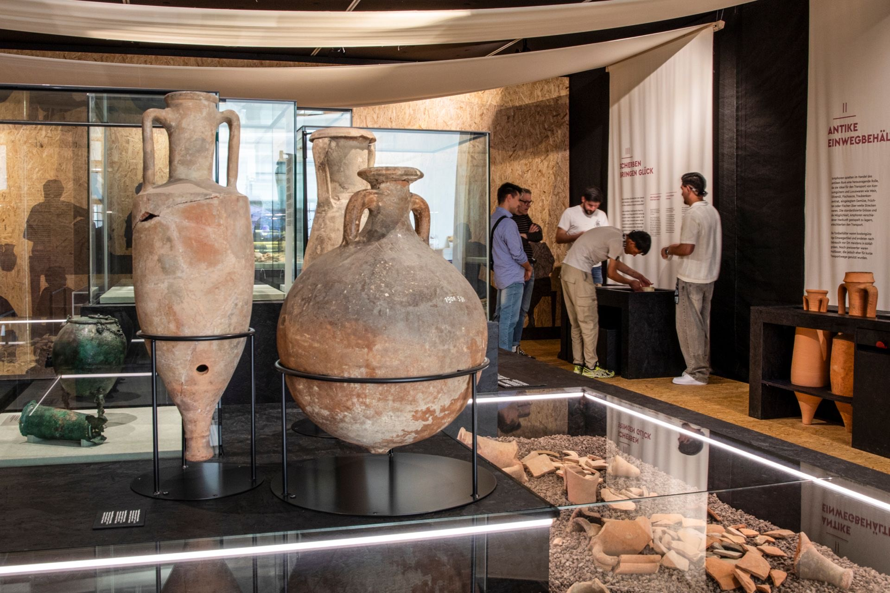

Programm für alle, überall
Desktop: Hover oder Tab über die Einträge · Mobile: scrollen



Programm für alle, überall
Eine Variante (Recommendation). Hover (oder Tastatur-Fokus) auf einen Eintrag: das passende Bild schiebt sich von unten über das vorherige, das Bild selbst läuft dabei leicht gegenläufig. Klick führt auf die Unterseite. Mobile: Komponente füllt den Viewport, wird beim Scrollen festgehalten, bis alle Einträge durch sind; danach scrollt die Seite normal weiter.
| Was | Auslöser | Dauer · Easing |
|---|---|---|
| Eyebrow und Einträge blenden von unten ein | Section 88 % im Viewport | 0.9 s · AR.ease.out, 70 ms Stagger |
| Neue Bild-Ebene fährt von unten (yPercent 100 → 0) | Desktop: Hover / Fokus | 0.9 s · AR.ease.inOut |
| Bild in der Ebene gegenläufig (−28 % → 0, 108 % → 100 %) | gleichzeitig | 0.9 s · AR.ease.inOut |
| Eintrag Weiss 60 → Weiss | gleichzeitig | CSS 0.3 s |
| Mobile: Section wird gepinnt, Scroll schaltet Eintrag für Eintrag weiter (mit Einrasten) | Scroll, ≤ 900 px | pin: true, 60 % Viewport pro Eintrag |
| Reduzierte Bewegung | Bilder überblenden statt schieben (0.3 s), kein Pinning auf Mobile: der Eintrag in der Bildschirmmitte wird aktiv. | |